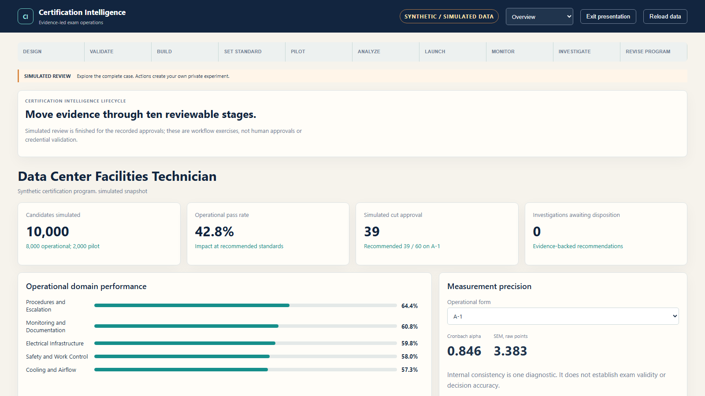

Define the work
Synthetic practitioner evidence supports proposed tasks and domain weights. A simulated reviewer disposition controls whether the JTA can feed the blueprint.
A connected workspace follows evidence from job analysis through release, monitoring, investigation and refresh. It demonstrates how review gates can control what moves forward.

Design → Validate → Build → Set Standard → Pilot → Analyze → Launch → Monitor → Investigate → Refresh
Synthetic practitioner evidence supports proposed tasks and domain weights. A simulated reviewer disposition controls whether the JTA can feed the blueprint.
The approved simulated JTA weights constrain form assembly. Twelve simulated judges complete three Modified Angoff rounds before a separate simulated approval records the standard.
Historical data covers 10,000 synthetic attempts and 600,000 simulated item responses. Monitoring can open an investigation without changing prior scores or evidence.
An approved simulated revision produces a successor item. That item receives its own 500-attempt synthetic pilot and exact revalidation before a refreshed release can advance.
This walkthrough shows an independent demonstration using simulated data and simulated reviewer decisions.
The public Certification Intelligence app is available for interactive review alongside this walkthrough.